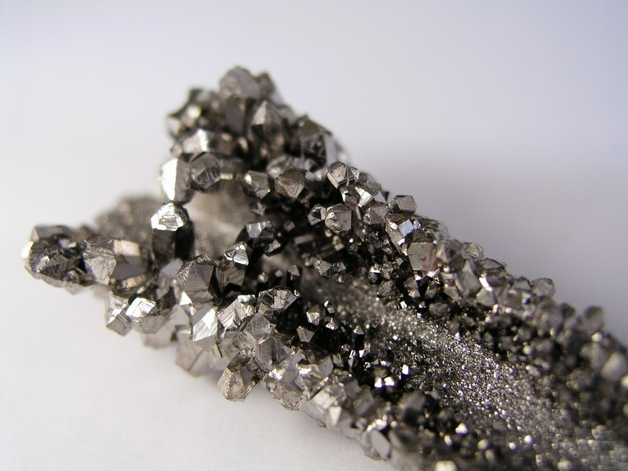
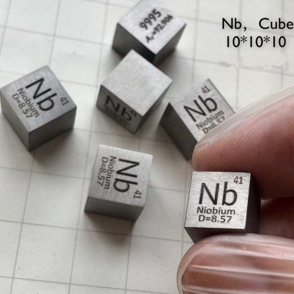
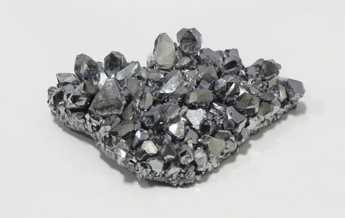

Ниобий
Нио́бий (химический символ — Nb, от лат. Niobium, устар. название — колумбий) — химический элемент 5-й группы (по устаревшей классификации — побочной подгруппы пятой группы, VB), Пятого периода периодической системы химических элементов Д. И. Менделеева, с атомным номером 41.

Открыт в 1801 г. английским химиком Ч. Хатчеттом и назван «колумбием» (по происхождению минерала, из которого был выделен в виде оксида). В течение нескольких десятилетий колумбий и близкий ему по свойствам тантал считали одним и тем же элементом. Индивидуальность колумбия была доказана в 1844 г., когда он был вторично «открыт» немецким химиком Г. Розе и назван «ниобий» (по имени Ниобы – дочери Тантала в древнегреческой мифологии; название подчёркивает сходство свойств ниобия и тантала). В 1845 г. Розе установил, что ниобий идентичен колумбию. В ряде стран (США, Англия) более 100 лет использовалось название «колумбий» (Columbium, Cb). Название «ниобий» утверждено ИЮПАК в 1950 г.

Ниобий относится к редким элементам. Содержание ниобия в земной коре 2·10–3 % по массе, чаще всего встречается совместно с Та и Ti. Важнейшие минералы: колумбит-танталит (Fe,Mn)(Nb,Ta)2O6, пирохлор (Na,Ca)2(Nb,Ti)2(OH,F)O6, лопарит (Na,Ce,Ca)(Nb,Ti)O3. Ниобий содержат также оловянные руды.Основными видами ниобиевой продукции являются феррониобий (85–90 %), пентаоксид Nb2O5, металлический Nb и сплавы. Для производства феррониобия (обычно содержит 65 % Nb) обогащённые механическими методами концентраты пирохлора подвергают металлотермическому восстановлению в смеси с Fe2O3 и порошкообразным Al. Технический пентаоксид получают выщелачиванием из концентратов и шлаков оловянной плавки действием фтороводородной кислоты с последующим отделением от Ta и очисткой методом жидкостной экстракции, осаждением гидроксида, сушкой и прокаливанием. Карбид NbC получают взаимодействием Nb2O5 с техническим углеродом в атмосфере Н2 при температуре 1800 °C и используют для изготовления керамических нагревателей. Получение чистого металлического ниобия ведут натриетермическим восстановлением K2NbF7, электролитическим восстановлением K2NbF7 и Nb2O5 во фторидном расплаве с последующей переплавкой в электродуговых и электроннолучевых печах. Порошкообразный ниобий производят гидрированием металла, механическим измельчением и разложением в вакууме гидрида. Объём мирового производства около 97 тыс. т/год (2019).

Феррониобий применяют в чёрной металлургии для производства микролегированных и нержавеющих сталей, а также суперсплавов. Чистый ниобий используют для получения жаропрочных и коррозионностойких сплавов c Zr для атомной (оболочки тепловыделяющих элементов АЭС содержат около 7 % по массе Nb) и авиакосмической промышленности (лопатки газовых турбин, детали других конструкций), получения прецизионных сплавов для сверхпроводников (магнитные катушки). Применяют сплавы ниобия с Та, Ti, Мо и др. В виде проката и проволок ниобий используют в электронной промышленности («горячая арматура», аноды, сетки, другие детали), в виде дисперсного порошка – в высокоёмких электролитических конденсаторах, как катализатор органических реакций.Чистый Nb2O5 (с содержанием не менее 99,8 %) используют для получения оптических материалов, монокристаллов ниобата лития, высокотемпературных пигментов. Карбид NbC применяют для изготовления керамических нагревателей.